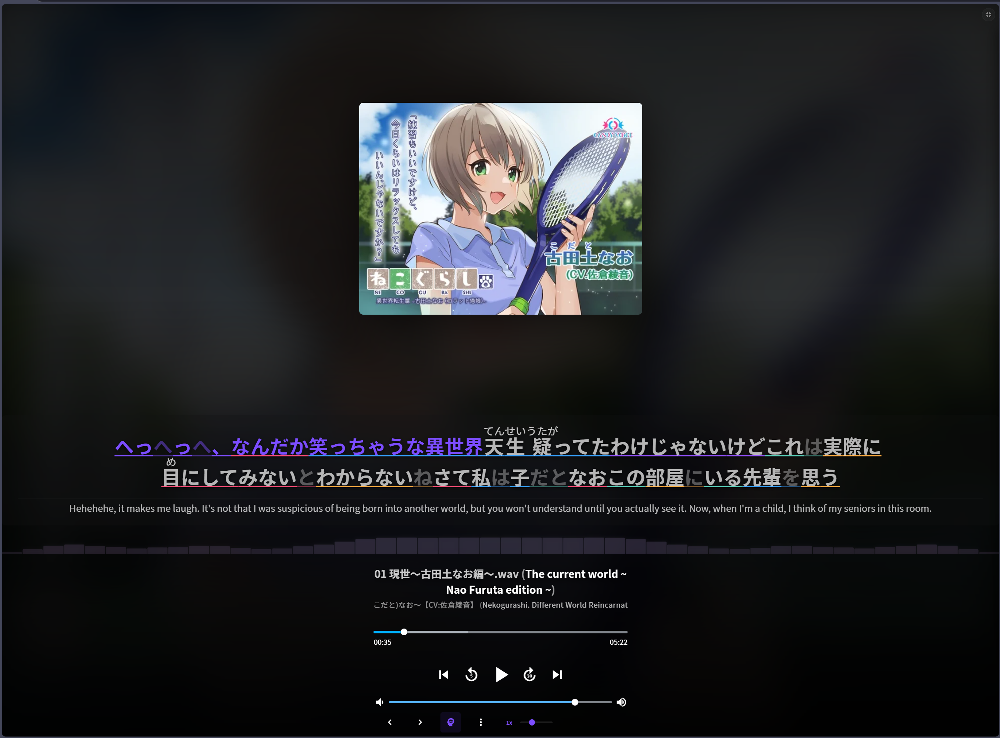

Features
A comprehensive breakdown of every feature in Voiceworks Toolkit, organized by category.
📚 Language Learning
Tools designed for immersion-based Japanese study.

Learner Mode — Dual-Language Subtitles
Real-time synced subtitles purpose-built for immersion-based Japanese study. Japanese text is displayed as the primary line with blurrable English translations underneath — hover or press B to reveal. Automatically loads LRC lyric files when available and integrates with live Whisper transcriptions for unstudied content. Chinese-language subtitles are auto-translated to Japanese so learners always see kana and kanji as the primary line. Playback speed controls and configurable lead-time let you study at your own pace.
Live Transcription — On-Device Speech-to-Text
Turns any voicework into study material by transcribing audio in real-time directly from the player element — no file downloads or uploads needed. Powered by Transformers.js running the Whisper model inside a dedicated Web Worker with WebGPU acceleration (automatic WASM fallback for older hardware). Transcripts are cached per-track with a 90-day TTL for instant reloads on revisit. Supports 8 language modes (Japanese, English, Chinese, Korean, etc.) and exports to LRC, VTT, and SRT subtitle formats.
Neural Translation — Local Machine Translation
Neural translation models running entirely in-browser via Web Workers. Uses greedy decoding for fast throughput on short text segments. WebGPU preferred with automatic WASM fallback and preferred-dtype caching. Features batch processing with an 8ms coalescing window, in-flight request deduplication, and a shared translation cache. Translates player titles, content tags, and UI elements in real-time.
Interface Translation
Localizes the platform's UI strings to English using a hardcoded translation map for static elements (sort options, buttons, menus) and pattern-based replacements for dynamic text. Combined with the neural tag translator, this makes the entire interface accessible to English-speaking learners.
🔍 Search & Discovery
AI-powered tools for finding content by meaning and metadata.
Semantic Search — AI-Powered Discovery
Find voiceworks by meaning rather than exact keyword matches. Embeds titles and descriptions using the Jina v3 embeddings API, with vectors stored locally in IndexedDB. Supports multilingual queries with tag-based hints and paginated results. Rate-limited to respect free tier limits. Ideal for finding content by topic or theme when you don't know the exact Japanese title.
Advanced Search — Multi-Filter Query Builder
Structured search with filters for tags, circles (creators), voice actors, date range, rating, and price. Supports AND/OR logic for combining multiple filters. Includes saved search history for quick re-use of frequent queries.
🎵 Playback & Immersion
Continuous playback modes for extended study sessions.
Radio Mode — Continuous Shuffled Playback
Shuffled continuous playback across your entire library for extended immersion sessions. Automatically selects random voiceworks and plays all tracks sequentially, advancing to the next work on completion. Health-checking and auto-recovery mechanisms keep the stream running through network interruptions. Playback state persists across page refreshes.
Playlist Mode — Sequential Work Playback
Curated playlist playback with forward/back navigation controls injected into the player bar. Auto-advances to the next voicework when the current one finishes. Paired with the Playlist Discovery panel for browsing, searching, and activating community-curated playlists.
Audio Cache — Offline Playback
IndexedDB-backed audio caching with TTL-based expiration. Automatically caches tracks during playback for offline replay and reduced bandwidth on revisits — useful for reviewing previously studied content without re-downloading.
Enhanced Shuffle
Improved playlist shuffling that integrates with native shuffle controls. Applies a hard shuffle maintaining the current track and persists the preference across sessions.
🎬 Media & Visualization
Rich media handling and audio visualization.
Media Viewer — Inline Gallery
Click-to-expand lightbox for images and video files bundled with voiceworks. Supports JPG, PNG, GIF, WebP, MP4, WebM, MOV, AVI, MKV, PDF, TXT, and SRT. Slideshow mode with auto-advance, keyboard navigation (arrow keys, ESC), and swipe support on touch devices.
Player Gallery — Album Art Slideshow
Image gallery integrated into the player's album art area. Displays cover images with slideshow navigation, arrow controls, swipe support, and keyboard shortcuts.
Audio Visualizer — Real-time Spectrum
40-bar frequency spectrum visualization using the Web Audio API. Renders in both a collapsible compact view and an expanded player-integrated view with smooth animations and configurable bar styling.
Player Fullscreen
CSS-based fullscreen expansion for the player area. Preserves playback during toggle and syncs with the Player Gallery when active. Keyboard shortcut: F.
📊 Progress & Organization
Track your listening history and navigate content efficiently.
Auto Progress Tracking
Automatically tracks listening progress across your library. Marks voiceworks as "listening" when playback starts and upgrades to "listened" at 80% completion. Progress checkmarks appear on work cards throughout the site.
Folder Diver — Smart Directory Navigation
Intelligently navigates nested voicework directory structures to find audio content. Uses a folder scoring algorithm that weights by audio file count, folder name keywords, and content relevance.
Flat View — Alternative File Browser
Side-drawer panel showing all files from a voicework in a flat list. Supports direct playback, lightbox image viewing, and file path copy with responsive layout.
⚙ Quality of Life
Dozens of enhancements for a polished, efficient study experience.
Keyboard Shortcuts
Comprehensive keyboard control for hands-free operation during study sessions. Smart input filtering ensures shortcuts are ignored when typing in text fields.
| Key | Action |
|---|---|
Space / K | Play / Pause |
M | Mute / Unmute |
F | Fullscreen toggle |
Left / Right | Seek ±5s (Shift: ±30s) |
Up / Down | Volume ±5% |
[ / ] | Playback speed |
0–9 | Jump to 0%–90% of track |
B | Toggle English subtitle blur |
J | Toggle Japanese subtitles |
Infinite Scroll
Replaces pagination with IntersectionObserver-based infinite scroll on home, category, and search pages for seamless browsing.
OS Media Integration
Updates system media controls (notification center, lock screen) with voicework metadata and album art. Control playback from your OS media keys without switching to the browser.
Translated Tags
Translates CJK tags throughout the entire UI to English using cached translations stored in IndexedDB. Work cards, search results, and filter panels are all covered.
Additional Features
Dynamic favicon showing current cover art, tag-click filtering with persistence, route state sync via URL parameters, SFW mode for public environments, full settings backup/restore, and complete UI localization in English, Chinese, and Japanese.
🏗 Architecture
Technical overview of the system design.
Parasitic Userscript Design
Hooks into the host site's Vue 2.6 + Quasar framework via a bridge singleton that exposes the app's Vuex store, Vue Router, and HTTP client. Features mount as isolated modules that register with a central lifecycle controller.
On-Device ML Pipeline
Whisper transcription and neural translation models run in dedicated Web Workers using Transformers.js. WebGPU provides GPU acceleration with automatic WASM fallback. Worker coalescing batches requests in 8ms windows for optimal throughput.
Efficient DOM Observation
A single MutationObserver on the document body handles all DOM watching. Features register callbacks with the central observer instead of creating individual observers, minimizing overhead.